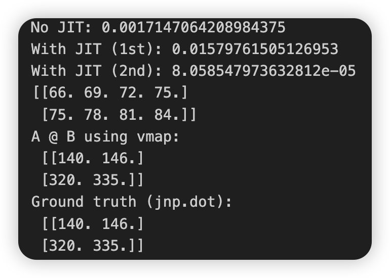
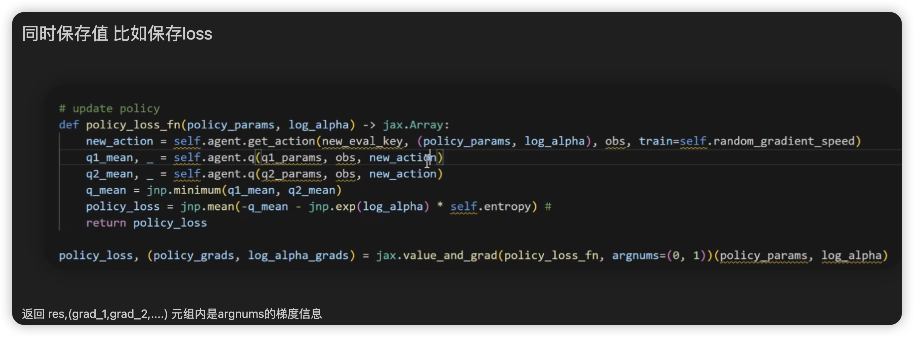
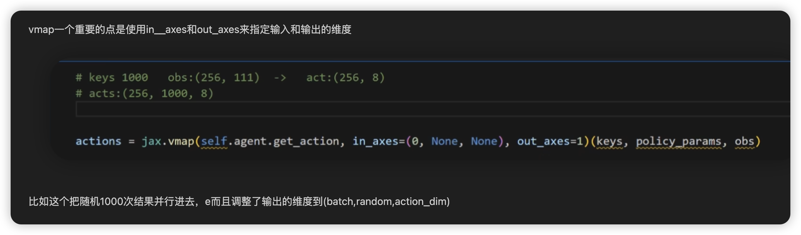
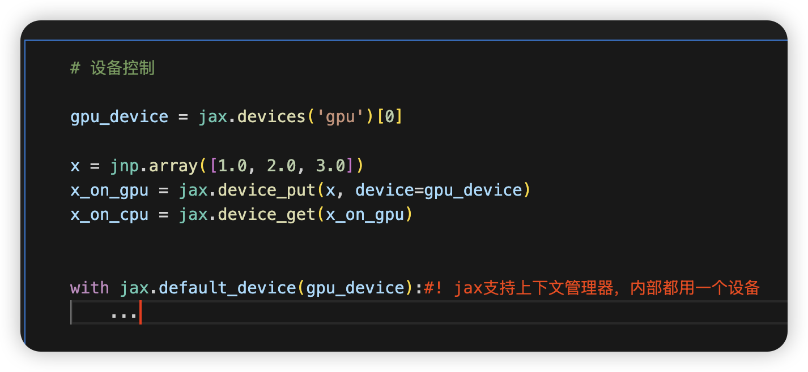
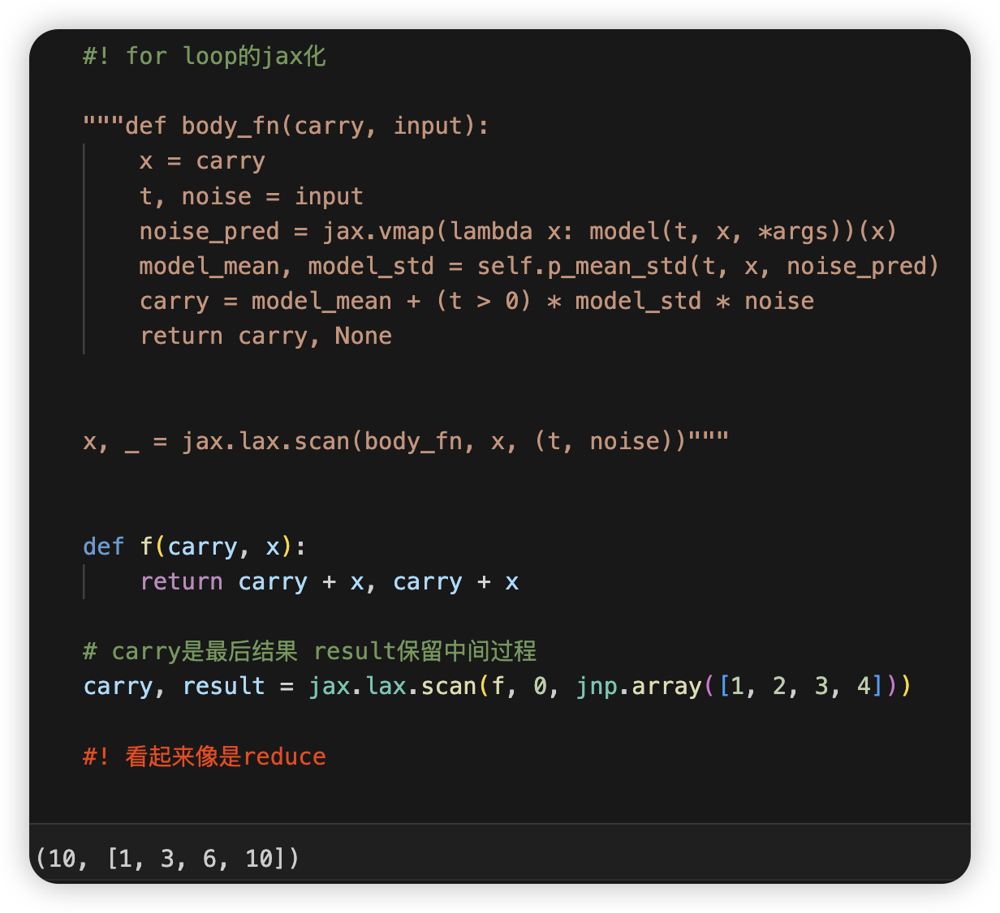
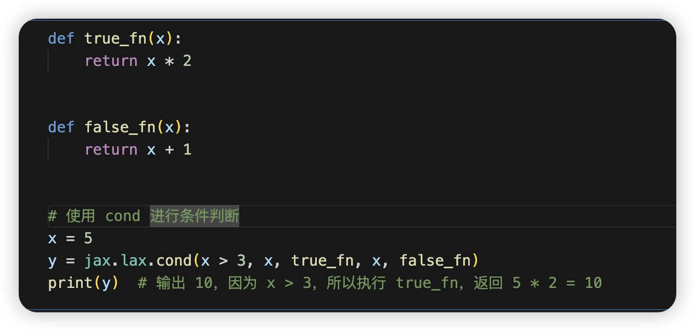
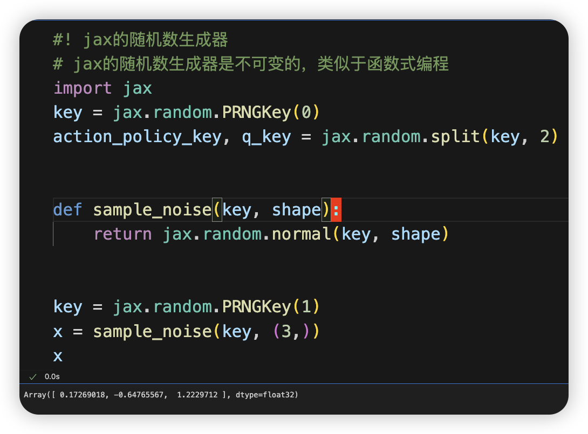
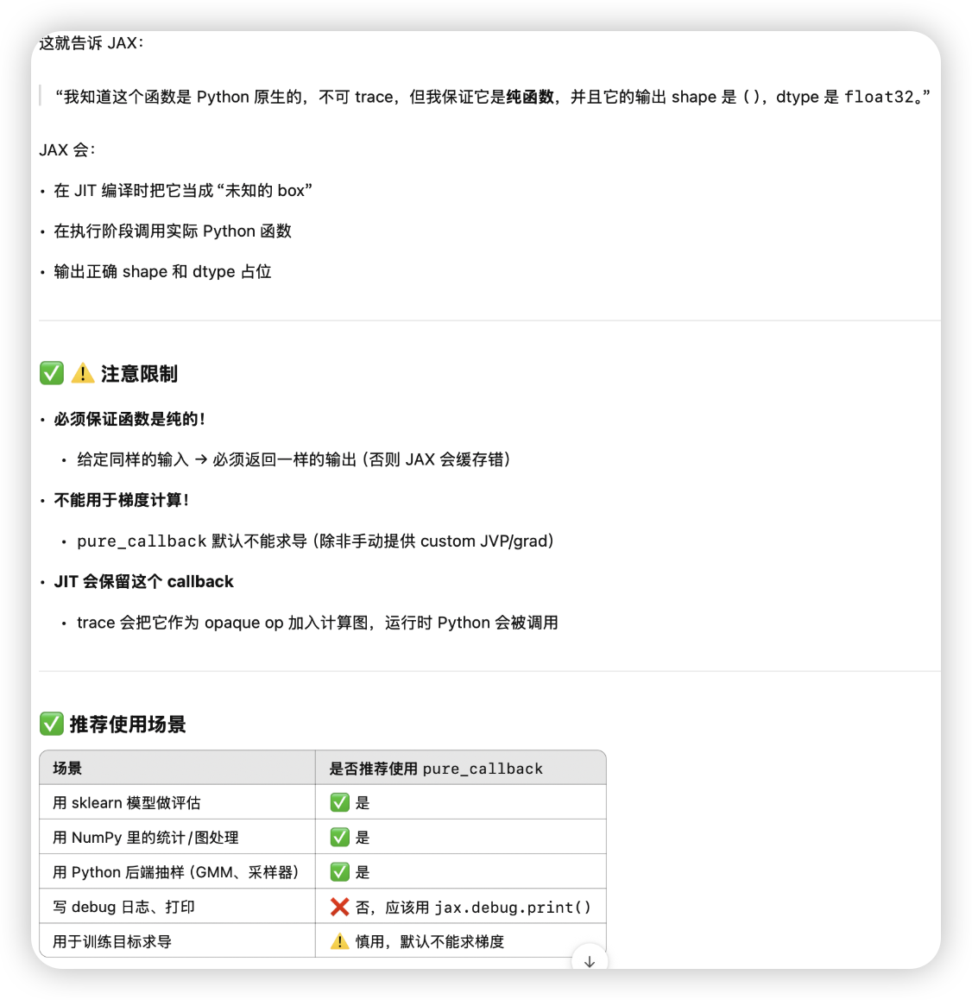

JAX base
JAX
学习资料：
-
https://www.zhihu.com/column/c_1729967479470804992 从入门到jax神经网络手写数字识别 对应的github仓库
-
https://space.bilibili.com/478929155/search?keyword=jax b站上的视频讲解，挺好懂的。
1 | import jax |
JAX的vmap，jit，grad等特性需要一个重要的限制：pure function。
纯函数 = 没有随机性，没有副作用，计算是可预测的 → JAX 可以放心变换和优化它
有这么几点限制：
- 纯函数内部不要读或写函数外的变量。
- 随机数 种子也必须传入
- 在函数内部动态构造对象（如 optimizer、model）是不行的


如果我们不小心写出了non-pure function，然后进行transformation怎么办？你肯定指望JAX抛出一个异常，可惜的是，JAX内部并没有检查函数是否pure的机制，对于non-pure，transformation的行为属于undefined，有点像C语言中的野指针，此时函数的执行结果不可预测。
另外的一些雷点：
- 切片和if 在jit里不能有传入的变量 因为jit时是在做tracer 没有具体值


- 条件分支

- vmap 指定保存的维度out_axes=0(default)

vamp的三个例子
1 | import jax |
结果

grad同时保存值，和指定求导的argnums
vmap用in__axes和out_axes来指定输入和输出的维度
设备控制&&自带上下文管理器
对于有累积variable的for-loop
和reduce像：

使用 cond 进行条件判断
这里如果是对一批值进行条件赋值，用jnp.where最好（虽然不是惰性的）
否则需要使用lax.cond来进行可以trace的条件判断
随机数生成器RNG
有时候不得不在jax里调用其它包的函数
使用pure_callback来调用非JAX函数
1 | # 引入纯Python函数 |
All articles in this blog are licensed under CC BY-NC-SA 4.0 unless stating additionally.